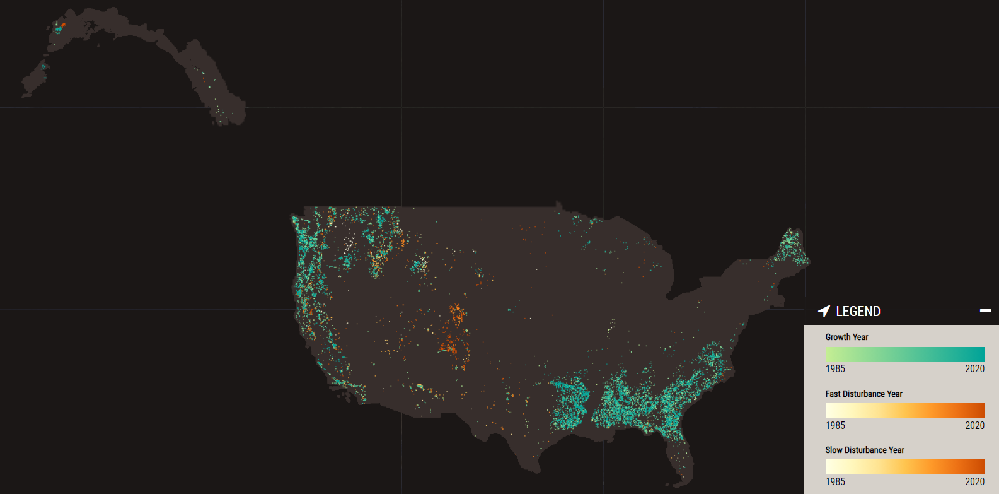
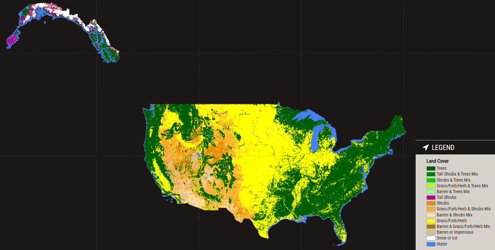

- Conterminous United States (v2022.8)
- Change
- Summary
- Annual
- Summary
- Land Cover
- Land Use
- QA Bits
- Change
- Southeastern Alaska (v2022.8)
- Change
- Summary
- Annual
- Summary
- Land Cover
- Land Use
- QA Bits
- Change
- Puerto Rico - US Virgin Islands (v2020.6)
- Change
- Summary
- Annual
- Summary
- Land Cover
- Land Use
- Change
INTRODUCTION
The Landscape Change Monitoring System (LCMS)
LCMS is the USDA Forest Service landscape change monitoring system for US lands

What does LCMS monitor?
Vegetation cover loss and gain
Annual vegetation cover loss and gain maps from 1985-present
What does LCMS monitor?
Land cover transitions
Annual land cover maps from 1985-present
What does LCMS monitor?
Land use transitions

Annual land use maps for each year from 1985-present
Where does LCMS monitor?
LCMS monitors all lands across the conterminous United States, southeastern Alaska, Puerto Rico US Virgin Islands, and Hawaii on an annual basis
APPLICATIONS
How is it useful?
Monitor tree mortality from insects and disease, fire, and harvest.

San Juans, CO
How is it useful?
Quantify tree mortality from insects and disease, fire, and harvest.

San Juans, CO
How is it useful?
Monitor trends of urban expansion.

Denver, CO
How is it useful?
Quantify trends of urban expansion.

Denver, CO
How is it useful?
Monitor tree mortality from insects and disease.

Sangre De Cristo Mts, CO
How is it useful?
Monitor trends of urban expansion.

Las Vegas, NV
How is it useful?
Quantify trends of urban expansion.

Las Vegas, NV
How is it useful?
Monitor fluctuations in water cover.

Lake Powell, UT
How is it useful?
Monitor cumulative tree harvest and regrowth.

Southeastern US harvest cycles, SC
How is it useful?
Monitor glacial recession.

AK
PRODUCTS
| Product Name | Description | Example | ||||||||
|---|---|---|---|---|---|---|---|---|---|---|
| Change |
|
|
||||||||
| Land Cover | Land cover classes represent the vegetation or other biophysical attributes of the land surface. | |
||||||||
| Land Use | Land use classes represent how biophysical attributes are being or could be used by humans. | |
BACKGROUND
Knowing where, when, and what factors create change across landscapes is critical to making sound land
management decisions. To support land managers and scientists with this need, an interagency effort between
leading remote sensing scientists and application specialists in the US Forest Service, US Geological Survey,
NASA, and numerous universities have collaborated to develop and produce a Landscape Change Monitoring System
(LCMS).
LCMS is a remote sensing-based system for mapping and monitoring landscape change across the United States. LCMS provides a best available map of landscape change that leverages advances in time series-based change detection techniques, Landsat and Sentinel data availability, cloud-based computing power, and big data analysis methods.
The LCMS Science Team initially developed LCMS methods (Cohen et al., 2018; Healey et al., 2018). The LCMS Production Team and Science Team annually review methods to ensure the LCMS mapping process is based on the best available science. All LCMS map products are recreated annually from 1985 to the most recent full growing season. LCMS mapping areas include all the United States and its territories. The current operational set of outputs cover the conterminous United States (CONUS), southeastern Alaska (SEAK) and Puerto Rico U.S. Virgin Islands. Future mapping efforts will extend to Hawaii.
Literature
CONTACT
Geospatial Technology and Applications Center (GTAC)
125 S State St, Suite 7105
Salt Lake City, UT 84138
Contact Us